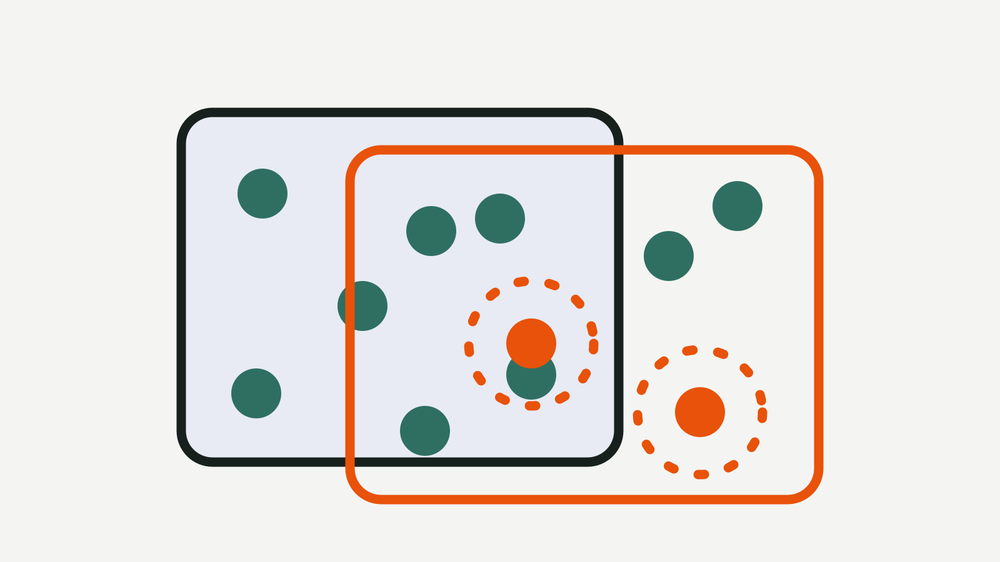

Blog
How to compare two pipeline runs
Two runs of the same pipeline gave different answers, and now someone has to say why. Before reaching for any tool it helps to decide what "different" means, because a naive diff of two logs is mostly noise: run names, session IDs and timestamps differ every time. This post walks through a manual comparison, then through two Nextflow features we tried on a deliberately tiny pair of runs, and finishes with what we think none of them settle. Everything we ran was on a toy script, so treat it as a demonstration of the shape of the problem, not a review.

What could be different
When we say two runs differ, we usually mean one or more of these:
- The parameters, including ones passed on the command line.
- The configuration, including profiles and files that were merged in.
- The pipeline code and its revision.
- The software: containers, modules or environments.
- The inputs, by path and by content.
- The outputs.
A comparison that only covers some of these can mislead. If you compare outputs alone, you learn that something differs but not why. If you compare parameters alone, you may miss that an input file was replaced under the same name.
A manual diff
The cheapest method needs no plugin. For each run, save what you can see at launch. nextflow log lists previous runs; in our test it printed a COMMAND column with the exact command line, which in our case showed the different --input and --label flags immediately. nextflow config -flat printed the resolved configuration as one setting per line, which diffs cleanly. Both were tested by us with Nextflow 25.10.0.
Save per-run facts, then diff them
nextflow log > runs.txt
nextflow config -flat > config-run-b.txt
diff config-run-a.txt config-run-b.txtThe weak point is discipline: you have to save the files at the time of each run, and the config you print later is the config on disk now, not necessarily the one that was in force then. We are not aware of a way around that without a record made at launch.
Nextflow lineage diff
Nextflow's documentation says data lineage is an experimental feature added in Nextflow 25.04, that its functionality may change in future releases, and that it is enabled with lineage.enabled = true.[1] The CLI reference lists lineage as the command to inspect lineage metadata for Nextflow runs.[2] Its subcommands include list and diff <LID> <LID>, which the documentation shows comparing two records (its example diffs two task runs).[1] The docs also state that tasks that failed or were aborted are not recorded.[1]
We tried it on a toy pair of runs of a one-process script, and ran diff on the two workflow-run records (not on task records), with the second run using a different input file and a different --label parameter.
List the runs, then diff their lineage records
nextflow lineage list
nextflow lineage diff lid://cb558a5410fb14052dde024707a61e55 lid://bd08fc9ae442092f597c8ddfbf11fc53The diff came back as a unified diff of two JSON records. Among the changed lines were the parameter values (sample.txt against sample2.txt, lines against words), which is what we wanted to see. It also contained run-specific lines such as the session ID and the run name, which always differ and tell you nothing about why the results differ. In our one test it was easy to spot the meaningful lines among a few dozen; we cannot say how that scales to a real pipeline with hundreds of tasks. Tested by us with Nextflow 25.10.0.
The nf-diff plugin
The Nextflow plugin registry describes nf-diff as a plugin that compares two workflow runs by reconstructing them from Nextflow's history and cache, producing an HTML, JSON or Markdown report. The page we read lists version 0.9.5, a requirement of Nextflow 25.04.0 or later and Java 17 or later, and an Apache License 2.0.[3] We are not affiliated with the plugin or its author.
Compare two runs by name
nextflow plugin nf-diff:diff nostalgic_mestorf naughty_turingnf-diff: comparing runs 'nostalgic_mestorf' and 'naughty_turing'
nf-diff: comparison complete
Diff : 1 changed, 0 only-in-B, 0 only-in-A, 0 unchanged
Mode : meaningful changes only (use --verbose for all fields)We trimmed the output. Tested by us with Nextflow 25.10.0 and nf-diff 0.9.5. The generated HTML report showed the two run commands side by side, the --input and --label parameters that differed, and a note that the changed task would have been recomputed rather than resumed. One caveat appears in the report itself: it says the resolved configuration is read from the current on-disk config files and is not a snapshot of the configuration at launch time. That matches the weak point of the manual method, and it is a good reminder to read a tool's own caveats before trusting a comparison.
What these approaches do not cover
All three methods above work on Nextflow runs, on one machine's history or lineage store, as long as that store still exists. We wonder how well any of them copes with:
- Comparing a Nextflow run with a Snakemake run, or with a shell script.
- Comparing runs made months apart, after the work directory was cleaned or the pipeline was updated.
- Comparing runs made by different people on different machines.
- Saying which differences are expected. A new session ID is a difference; so is a new reference genome build; a tool cannot tell which one you care about.
These are open questions for us, not claims about the tools. Both features are young, and the lineage feature is described as experimental by its own documentation.[1]
Where Jubilab is now
An earlier Jubilab prototype could compare two runs and show which recorded parameters, versions or results differ, with an evidence status on each fact, which is why a comparison could say "unknown" rather than "same". Jubilab's earlier run-record prototype is not being offered. Jubilab is now building the order-to-result layer for lab work. We are recruiting early adopters (request access and we invite small groups first), but the order layer is still being built and nothing is released yet. Jubilab does not replace Nextflow, its lineage feature or nf-diff, and it is not affiliated with or endorsed by Nextflow, Seqera or the plugin's author. For the wider picture see what parameters produced this result and Nextflow provenance and lineage compared.
Questions we are still asking
- How noisy do these diffs become on a real pipeline with many processes? We tested one task.
- Should a comparison tool hide fields like session IDs by default, or show everything and let the reader filter?
- If the configuration cannot be recovered as it was at launch, how should a comparison say so?
- What should a comparison say when one side has no record for a field: different, or unknown?
- Will lineage and nf-diff change enough that a post like this needs a version number on every command? We expect so, and it is why we state the versions we tried.
Where Jubilab is now
This post comes from our earlier work on a record of how results are made. Jubilab's earlier run-record prototype is not being offered. Jubilab is now building the order-to-result layer for lab work. We are recruiting early adopters (request access and we invite small groups first), but the order layer is still being built and nothing is released yet.
Request early accessSources
- Data lineage — Seqera, Nextflow documentation. Accessed 19 October 2026. https://docs.seqera.io/nextflow/data-lineage
- Nextflow command-line interface reference — Seqera, Nextflow documentation. Accessed 19 October 2026. https://docs.seqera.io/nextflow/reference/cli
- nf-diff plugin — Nextflow plugin registry. Accessed 19 October 2026. https://registry.nextflow.io/plugins/nf-diff
Written by Jubilab. Published 19 October 2026; last updated 19 October 2026. Where this post names other products or projects, Jubilab is not affiliated with or endorsed by them, and it does not claim any integration with them. Things we could not check are written as questions; if you spot a mistake, email hello@jubilab.io.